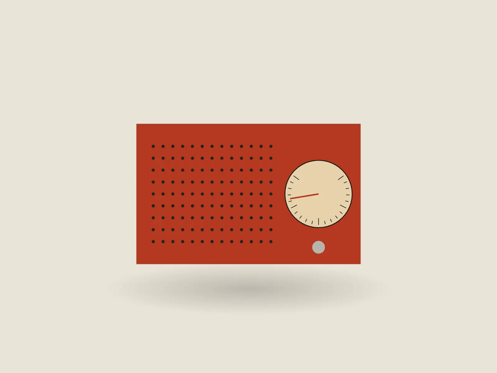
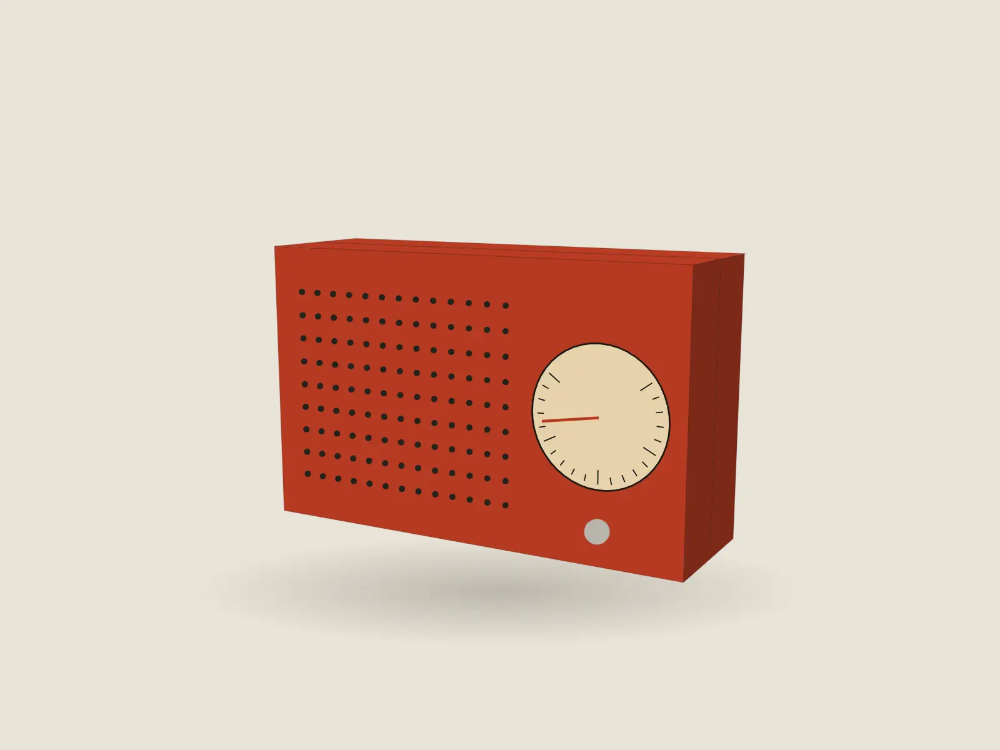
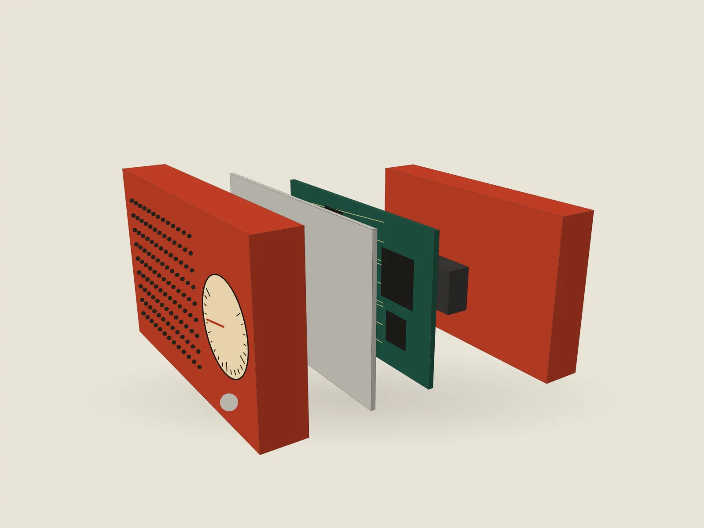
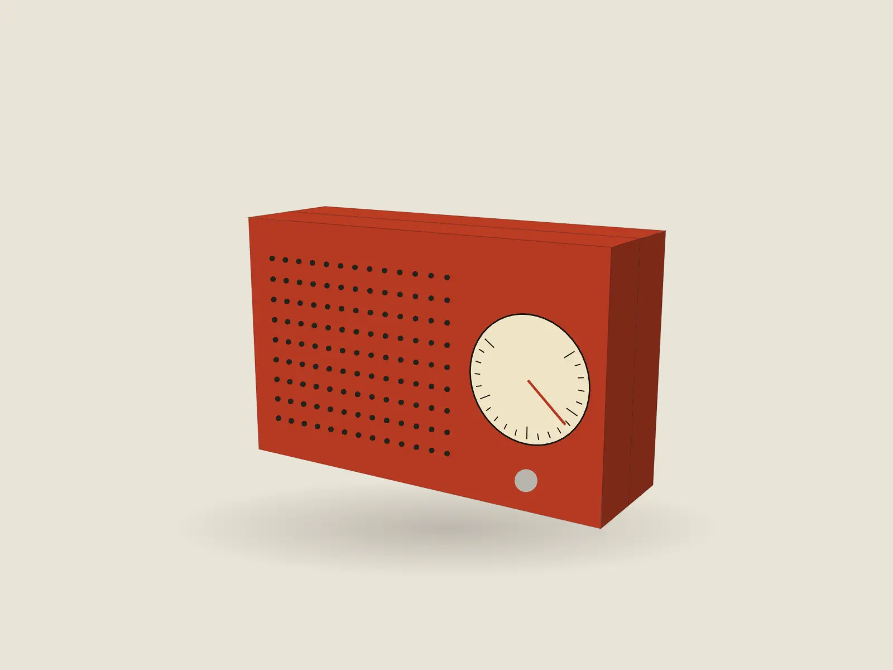

A radio you tune by hand
One radio, taken apart in four steps

01 · Face
Folded from one sheet
The case is 1.5 mm aluminium, anodised vermilion, bent at four corners and closed with two screws.

02 · Profile
48 mm deep
Shallow enough for the shelf above the stove, deep enough for a speaker that carries across a kitchen.

03 · Inside
Five parts, no glue
Front shell, dial plate, one board, one 3.7 V cell, back shell. Every part comes out with a screwdriver.

04 · Tune
A dial, not a screen
Turn the knob and the needle moves across the band. The station stays where you left it.
Specifications
- Band
- FM 87.5–108 MHz, analogue tuning
- Case
- 1.5 mm anodised aluminium, 160 × 100 × 48 mm
- Weight
- 540 g
- Power
- 3.7 V cell, about 22 hours per charge, USB-C
- Speaker
- 57 mm full-range
- Repair
- Every part is replaceable; the manual ships in the box